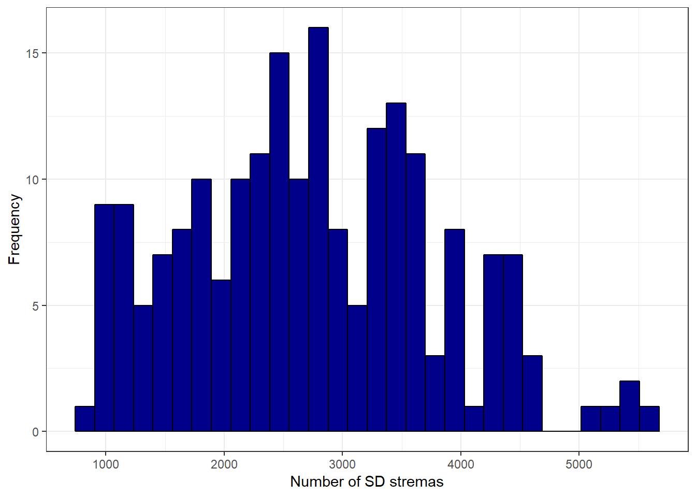
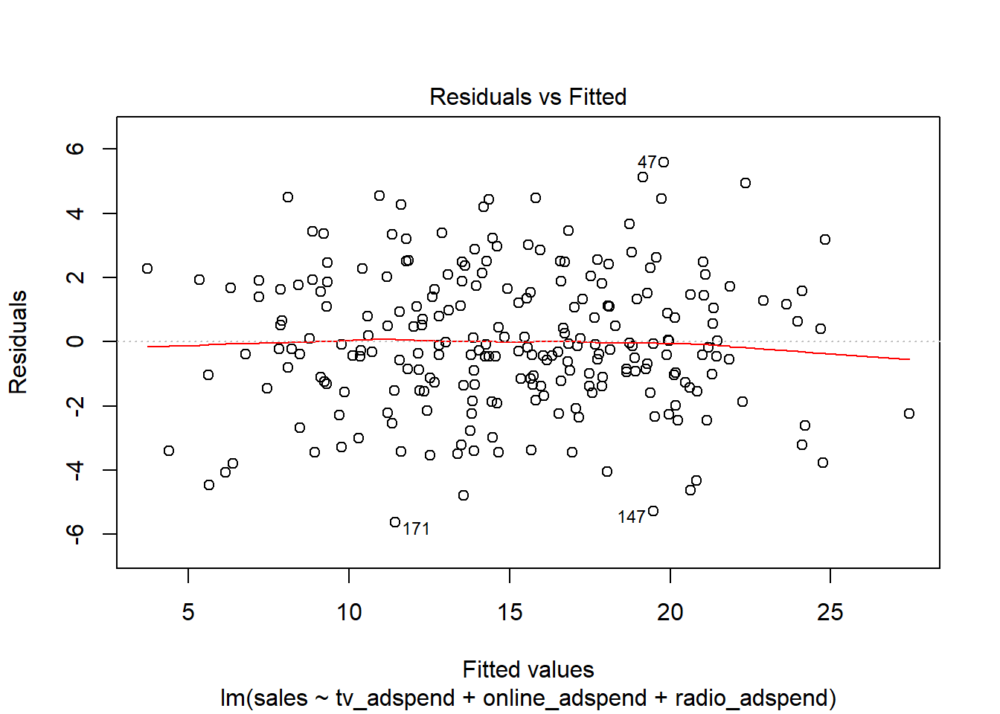

9 Assignments
9.1 Assignment 2 (Hypothesis Testing)
As a marketing manager at a video streaming service, you are interested in the effect of online advertising on the number of streams that a movie receives. To test the effect of online advertising on streams, you select a representative sample of 200 movies and randomly assign 100 movies to be included in an online advertising campaign. The other half of the sample serves as the control group. You run the experiment for one week and collect data regarding the number of streams for each movie from this period. Overall, the data set includes the following variables:
- movieID: unique movie ID
- streams_sd: number of streams in SD-quality
- streams_hd: number of streams in HD-quality
- online_advertising: indicator whether a movie was included in the online advertising campaign (0 = no, 1 = yes)
Apply appropriate statistical methods to answer the following questions:
- Compute the 95% confidence interval for the mean number of streams for movies in SD and HD quality and provide an interpretation of the interval
- Your historical data tells you that the movies in SD and HD quality received 2,600 and 1,700 streams in the previous week, respectively. Please test if the number of streams that the movies received (irrespective of whether they were included in the experiment or not) in the week of the experiment is significantly different from the previous week for SD and HD movies.
- Is there a significant difference in streams between movies that were included in the online advertising campaign and those that were not included? (Please conduct the test for SD and HD movies and also compute the effect size Cohen’s d)
- Is there a significant difference in streams between movies in HD and SD quality? (Please also compute the effect size Cohen’s d)
- Assume that you plan to run an experiment with two groups to test two different advertising strategies. You randomly assign movies to the control and experimental conditions and your goal is to test if there is a significant difference between the groups regarding the number of streams that the movies receive. How many movies would you need to include in each group of your experiment if you assume the effect size to be 0.3 for a significance level of 0.05 and power of 0.8?
When answering the questions, please remember to address the following points, where appropriate:
- Formulate the corresponding hypotheses and choose an appropriate statistical test
- Provide the reason for your choice and discuss if the assumptions of the test are met
- Convert the variables to the appropriate type (e.g., factor variables)
- Create appropriate graphs to explore the data (e.g., boxplot, bar chart, histogram)
- Provide appropriate descriptive statistics for the variables
- Report and interpret the test results accurately (including confidence intervals)
- Finally, don’t forget to report your research conclusion in an appropriate way
When you are done with your analysis, click on “Knit to HTML” button above the code editor. This will create a HTML document of your results in the folder where the “assignment.Rmd” file is stored. Open this file in your Internet browser to see if the output is correct. If the output is correct, submit the HTML file via Learn@WU. The file name should be “assignment2_studendID_name.html”.
9.1.1 Load and inspect data
## 'data.frame': 200 obs. of 7 variables:
## $ streams_sd : int 3375 2945 3395 3927 3259 1463 2482 2962 2496 3670 ...
## $ online_advertising: int 0 0 1 1 1 0 1 0 0 1 ...
## $ customer_rating : int 4 4 4 4 3 3 4 5 5 5 ...
## $ streams_hd : int 2156 1856 2073 1123 3092 1630 2412 1935 1097 2248 ...
## $ movieID : int 1 2 3 4 5 6 7 8 9 10 ...
## $ genre : int 1 1 1 1 1 1 1 1 1 1 ...
## $ academy_award : int 1 1 1 0 1 1 1 1 1 0 ...9.1.2 Load packages
First let´s load all required packages
9.1.3 Question 1
To compute the confidence intervals for SD and HD streams we will need the mean, standard deviation, standard error, degrees of freedom and the critical value for a t-distribution (we will use a t-distribution, because we are not sure of the variance in the population).
Hence, the CI for SD movies is given by:
## [1] 2589## [1] 2883Thus, \(CI_{SD} = [2589.21,2883.83]\).
Similarly, the CI for HD movies is given by
## [1] 1758## [1] 1939Thus, \(CI_{HD} = [1757.72,1939.11]\).
The intervals can be interpreted as follows: If we would take 100 samples, calculate the mean and confidence interval for each of them, then the true population mean would be included in 95% of these intervals.
9.1.4 Question 2
To find out whether our data for SD and HD streams differs significantly from the previous week (2600 for SD; 1700 for HD) we will conduct a one sample t-test. This is appropiate, because 1) our data is on an interval scale, and 2) the sampling distribution can be considered as normally distributed due to the fairly large sample size (n=200; see central limit theorem).
Our null hypothesis states that there is no difference between the quantity of SD/HD streams watched in the current week, compared to the previous week. Rejecting the null hypotheses/accepting the alternative hypothesis would mean that there indeed was a difference between the two weeks.
So for our SD streams we could formulate our hypothesis as follows:
\[H_0: \mu_0 = 2600 \\ H_1: \mu_0 \neq 2600 \]
The same approach can be used for our HD streams:
\[H_0: \mu_0 = 1700 \\ H_1: \mu_0 \neq 1700 \]
We can first have a quick look at the descriptive statistics:
## movie_data$streams_sd
## n missing distinct Info Mean Gmd .05 .10
## 200 0 195 1 2736 1201 1071 1271
## .25 .50 .75 .90 .95
## 1942 2683 3486 4208 4463
##
## lowest : 852 972 982 992 995, highest: 5042 5252 5359 5509 5622## movie_data$streams_hd
## n missing distinct Info Mean Gmd .05 .10
## 200 0 195 1 1848 742.5 843.2 1089.6
## .25 .50 .75 .90 .95
## 1348.5 1765.5 2379.0 2743.8 2992.1
##
## lowest : 605 610 649 680 681, highest: 3092 3124 3240 3414 3726As we can see, the differences between SD/HD and the week before don´t seem to be extraordinary high. For both SD and HD streams the absolute difference compared to the previous week are around 150, while the relative difference appears to be larger for the HD movies.
To visualize the distribution of the data, we can create histograms:

We can now conduct a one sample t-test to test for significance.
##
## One Sample t-test
##
## data: movie_data$streams_sd
## t = 2, df = 200, p-value = 0.07
## alternative hypothesis: true mean is not equal to 2600
## 95 percent confidence interval:
## 2589 2883
## sample estimates:
## mean of x
## 2736##
## One Sample t-test
##
## data: movie_data$streams_hd
## t = 3, df = 200, p-value = 0.001
## alternative hypothesis: true mean is not equal to 1700
## 95 percent confidence interval:
## 1758 1939
## sample estimates:
## mean of x
## 1848For SD streams we can conclude that the average number of SD streams watched in this week (\(2736\)) were not significantly different from the \(2600\) streams watched in the previous week, t(199) = 1.827, p > .05 (95% CI = [2589; 2883]). This can be seen from the fact that the p-value is larger than 0.05. This is also evidenced by the fact that the null hypothesis (\(2600\)) is included in the range of plausible values given by the confidence interval.
However for HD streams we see that the perceived mean in our sample (\(1848\)) is significantly higher compared to the previous week t(199) = 3.227, p <.05 (95% CI = [1758; 1939]). This can be seen from the fact that the p-value is smaller than 0.05. This is also evidenced by the fact that the null hypothesis (\(1700\)) is not included in the range of plausible values given by the confidence interval.
9.1.5 Question 3
First we will analyse whether the advertising campaign had an effect on SD streams. We need to formulate a hypothesis which we can test. In this case the null hypothesis is that the campaign had no effect on the mean number of streams, i.e. that there is no difference in the mean number of streams between the two populations. The alternative hypothesis states that the campaign did have an effect, meaning that there is a difference in the mean number of streams between the populations. In more formal notation this is:
\[H_0: \mu_0 = \mu_1 \\ H_1: \mu_0 \neq \mu_1\]
We need to transform the variable online_advertising into a factor variable for some of our applications.
A good way to get a feeling for the data is to create descriptive statistics and appropriate plots. Since we are testing differences in means, a plot of means would be appropriate.
##
## Descriptive statistics by group
## group: no
## vars n mean sd median trimmed mad min max range skew kurtosis se
## X1 1 100 2107 791 2122 2070 957 852 4205 3353 0.28 -0.79 79.1
## --------------------------------------------------------
## group: yes
## vars n mean sd median trimmed mad min max range skew kurtosis se
## X1 1 100 3365 896 3388 3346 949 1545 5622 4077 0.22 -0.41 89.6
As we can see in both the descriptive statistics and the plot, the mean of the number of streams is higher where online_advertising = “yes”, i.e. for the movies that were included in the marketing campaign. To test whether or not this difference is significant, we need to use a two sample t-test. We use an inpependent-means t-test because we have different movies in each group (i.e., the movies in one condition are indpendent of the movies in the other condition). The requirements are clearly met:
- Our dependent variable is on an interval scale
- Since we have more than 30 observations per group we do not really have to concern ourselves with whether the data is normally distributed or not (see central limit theorem)
- If a movie was inluded in the campaign or not was assigned randomly
- R automatically performs Welch’s t-test, which corrects for unequal variance
Thus we can perform the test in R
##
## Welch Two Sample t-test
##
## data: streams_sd by online_advertising
## t = -10, df = 200, p-value <0.0000000000000002
## alternative hypothesis: true difference in means is not equal to 0
## 95 percent confidence interval:
## -1494 -1023
## sample estimates:
## mean in group no mean in group yes
## 2107 3365The test is significant, since the p-value is smaller than 0.05, leading us to reject the null hypothesis that there is no difference in the mean number of streams. The p-value states the probability of finding a difference of the observed magnitude or higher, if the null hypothesis was in fact true (i.e., if there was no difference between the populations). In effect, this means that the advertising campaign had an effect on the average number of times a video was streamed. Another thing we can extract from this test result is the confidence interval around the difference in means. Since \(0\) is not included in the interval, it is not a plausible value.
The standardized effect size can be computed using the cohensD function:
## [1] 1.49This maginitude of the effect size (1.49) suggests that the effect of online advertising on the number of SD streams is large.
The same can be done analogously for HD streams:
##
## Descriptive statistics by group
## group: no
## vars n mean sd median trimmed mad min max range skew kurtosis se
## X1 1 100 1522 420 1510 1517 416 605 2517 1912 0.13 -0.27 42
## --------------------------------------------------------
## group: yes
## vars n mean sd median trimmed mad min max range skew kurtosis se
## X1 1 100 2174 678 2332 2202 650 649 3726 3077 -0.33 -0.68 67.8
Again, the summary statistics and the plot seem to indicate that there is a difference in means. Using the same reasoning as before, we can conclude that we need a two sample t-test to determine whether this difference is signficant (note that two sample t-test means the same as independent-means t-test).
##
## Welch Two Sample t-test
##
## data: streams_hd by online_advertising
## t = -8, df = 200, p-value = 0.00000000000007
## alternative hypothesis: true difference in means is not equal to 0
## 95 percent confidence interval:
## -809 -495
## sample estimates:
## mean in group no mean in group yes
## 1522 2174Again, the p-value is so low that any sensible signifcance level would lead us to reject the null hypothesis, leading us to the conclusion that there is a difference in mean number of streams between videos included in the campaign and those that aren’t.
Calculate the standardized effect size:
## [1] 1.16The meagnitude of the effect size indicates again that this effect is large, although it is a little smaller than for SD streams.
9.1.6 Question 4
Next we want to examine whether HD and SD streams have similar numbers on average. The null hypothesis here is that there is no difference in the mean number of HD streams and the mean number of SD streams for the same movies. Because the observations come from the same population of movies, we refer to the difference in the means for the same populaltion as \(\mu_D\) when stating our hypotheses. The alternative hypothesis states that that there is a difference between the streams in HD and SD quality for the same movies. In mathematical notation this can be written as
\[H_0: \mu_D = 0 \\ H_1: \mu_D \neq 0\]
Again, we start with descriptive statistics to get a feel for the data.
## vars n mean sd median trimmed mad min max range skew kurtosis
## X1 1 200 2736 1053 2683 2705 1152 852 5622 4770 0.27 -0.45
## se
## X1 74.5## vars n mean sd median trimmed mad min max range skew kurtosis se
## X1 1 200 1848 650 1766 1826 690 605 3726 3121 0.33 -0.63 46
As in question one, it appears that there is a difference in the means. To test whether it is significant we again need a t-test, with one important distinction: The same movies are observed for HD and SD streams, since the movies are available in both formats. This means that we need a dependent means t-test. The other assumptions are virtually identical to the regular t-test . The test can be executed in R by adding paired = TRUE to the code.
##
## Paired t-test
##
## data: movie_data$streams_hd and movie_data$streams_sd
## t = -10, df = 200, p-value <0.0000000000000002
## alternative hypothesis: true difference in means is not equal to 0
## 95 percent confidence interval:
## -1036 -739
## sample estimates:
## mean of the differences
## -888The p-value is again lower than any sensible signifance level (p < .05), which means that we reject the null hypothesis that there is no difference in the mean number of streams.
Now let’s find out how strong this effect is.
## [1] 1.01A standardized effect size of 1.0 tells us that this effect is large.
9.1.7 Question 5
The question of how many movies we would need to include in each sample of our experiment can be answered quite comfortably with a power calculation function in R.
##
## Two-sample t test power calculation
##
## n = 175
## d = 0.3
## sig.level = 0.05
## power = 0.8
## alternative = two.sided
##
## NOTE: n is number in *each* groupTo achive our desired effect size of 0.3, a significance level of 0.5 and a power of 0.8 we would need to include at least 175 movies per group in our sample.
Casella, George, and Roger L Berger. 2002. Statistical Inference. 2nd ed. Duxbury Pacific Grove, CA.